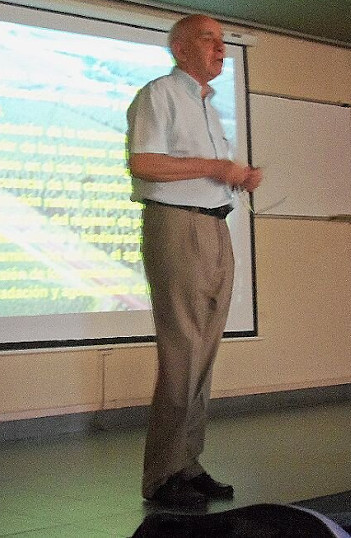
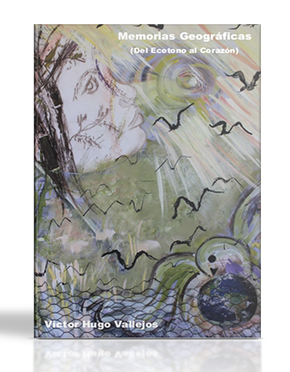

Geografía
Docente e investigador comprometido con el estudio del territorio, los recursos naturales y los paisajes que definen nuestra identidad.
ExplorarGeografía · Música · Libros
Profesor, músico y escritor argentino. Una vida dedicada a comprender el territorio, a crear desde la música y a dejar huella en la escritura.
Conocer másMemorias Geográficas. Del ecotono al corazón

Un recorrido íntimo y académico por los paisajes que moldean nuestra identidad. Entre el ecotono y el corazón, geografía y memoria se entrelazan en una obra única.
Tres dimensiones de una vida creativa y académica en constante movimiento.

Docente e investigador comprometido con el estudio del territorio, los recursos naturales y los paisajes que definen nuestra identidad.
ExplorarCompositor e intérprete, la música es para Víctor Hugo otra forma de contar el mundo. Canciones que narran el paisaje y la memoria colectiva.
EscucharLibros y textos que condensan años de investigación, reflexión y escritura sobre el territorio y la cultura.
LeerEsta página fue creada fundamentalmente para acoger y acercar a cualquier visitante al ámbito de una vida dedicada a la geografía, la docencia, la música y la escritura.
Leer más